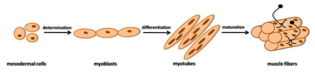

Read the text and answer the following activities. If there is a word you don't understand, you can look it up here.
|
Skeletal muscle originates mainly from paraxial mesoderm arranged in somites, responsible for metameric organization of the body, in many animal species including humans. The somites are arranged in pairs along the longitudinal axis of the embryo.They are extremely important for organization of the segmental plan of vertebrates. In every somite, it is possible to identify an internal mesenchymal mass and an epithelial lining, which is formed in consequence of the mesenchymal-epithelial transition (MET) regulated by fibronectin, N-cadherin and a small GTPase (Rac1). The somites are detached from one another and subsequently due to local molecular signals, they differentiate into three portions: sclerotome, myotome and dermatome. The differentiation process depends on interactions with the surrounding tissues and is regulated by signal molecules from ectoderm, notochord and neural tube. The myotome cells separate, migrate in the appropriate areas and generate myoblasts. Myogenesis is the muscle differentiation process that involves the proliferation of myoblasts, followed by their mutual fusion in order to form polynuclear syncytia, expressing the characteristic proteins of muscle tissue. Myogenesis involves several stages: specification, determination and differentiation. Specification is characterized by intra- and extracellular processes that cause mesodermal cells to respond to molecular signals by which the myoblasts are generated. Differentiation includes the synthesis of the myofibrillar proteins (actin, myosin and tropomyosin), the increased activity of intracellular enzymes (creatine phosphokinase and glycogen phosphorylase) and the synthesis of acetylcholinesterase and acetylcholine receptor (AchR). Once differentiated, myoblasts do not proliferate more, but secrete fibronectin in the extracellular matrix and then bind it. The link between myoblasts and fibronectin allows the formation of myoblast chains. Now myoblasts can fuse together to form myotubes, set to become skeletal muscle fibers. Fusion of myoblasts includes the production of myoblast-myoblast pre-fusion complexes, characterized by fragmentation of cell membrane and rearrangement of cytoskeleton. The final stage of myogenesis is the maturation of muscle fiber. In humans, at the end of the 8th week of pregnancy most of the myotubes are differentiated into muscle fiber.  |